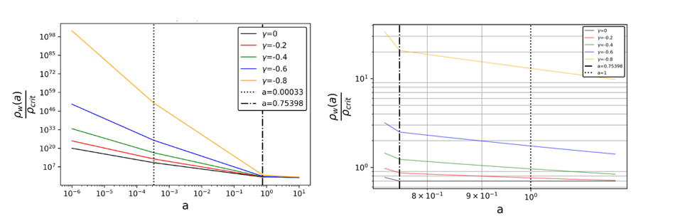
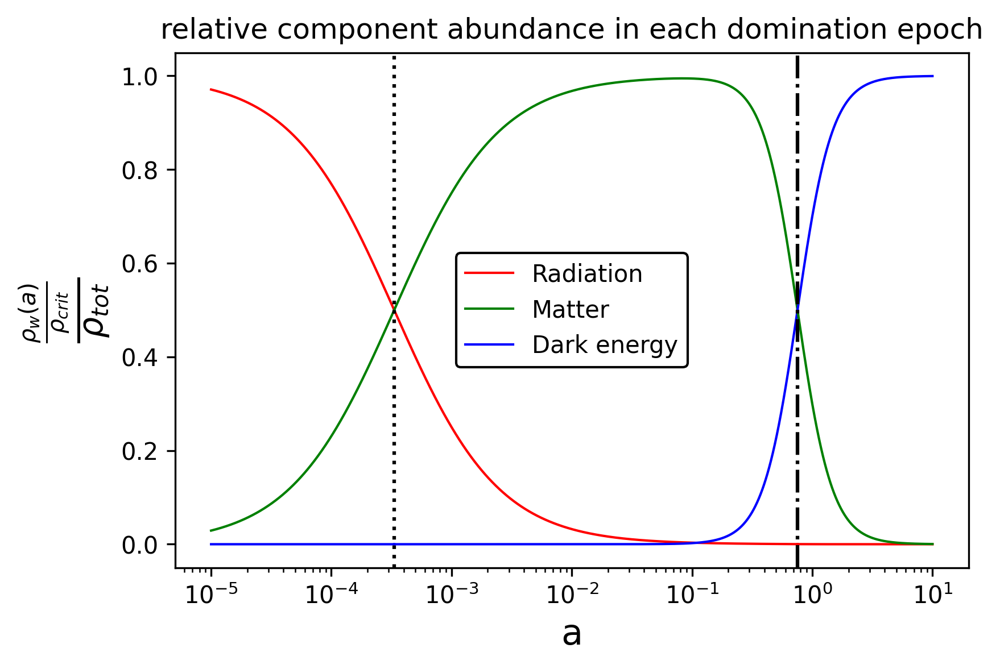

Figure 2. Summary of evolution with increasing scale factor of matter-energy component densities for all γ values. Component densities are shown in their respective domination epochs, overlaid for each γ value to illustrate how the rate of density dilution changes with varying speed of light.

Figure 3. Relative matter-energy component abundances as a function of the scale factor. The dotted line marks the radiation–matter transition and the dash-dotted line marks the matter–dark energy transition. Crucially, these domination epoch cutoffs are identical for all γ values, including the standard Λ-CDM case.